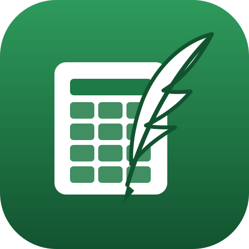

<body style="margin:0;padding:24px;background:#e8eaee;display:flex;gap:28px;flex-wrap:wrap;font-family:sans-serif"><figure style="margin:0;text-align:center"><br> <figcaption>QuillPen</figcaption></figure><figure style="margin:0;text-align:center"><div style="width:160px;height:160px;border-radius:50%;background:#2A57B8;overflow:hidden"></div><figcaption>adaptive (round mask)</figcaption></figure><figure style="margin:0;text-align:center"><br> <figcaption>QuillGrid</figcaption></figure><figure style="margin:0;text-align:center"><div style="width:160px;height:160px;border-radius:50%;background:#1E7A46;overflow:hidden"></div><figcaption>adaptive (round mask)</figcaption></figure><figure style="margin:0;text-align:center"><br> <figcaption>QuillPost</figcaption></figure><figure style="margin:0;text-align:center"><div style="width:160px;height:160px;border-radius:50%;background:#0D7C86;overflow:hidden"></div><figcaption>adaptive (round mask)</figcaption></figure><figure style="margin:0;text-align:center"><br> <figcaption>QuillStage</figcaption></figure><figure style="margin:0;text-align:center"><div style="width:160px;height:160px;border-radius:50%;background:#C2502A;overflow:hidden"></div><figcaption>adaptive (round mask)</figcaption></figure></body>